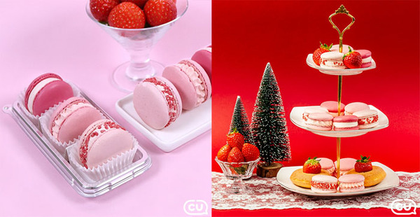
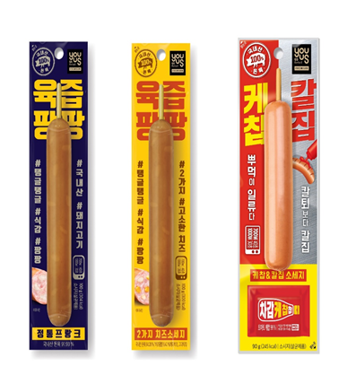

‘마카롱’…CU 베스트셀러
월 100만개 이상 판매, 두달만에 누적판매량 300만개 돌파

CU에서 출시한 쫀득한마카롱이 월 100만개 이상 판매량을 기록하며 자체 베스트셀러 아이템에
이름을 올렸다. 이는 하루 평균 3만4000여개가 판매된 것으로, 두달여 만에 누적판매량이 300만개를 돌파한 수준이다.
BGF리테일의 편의점 CU는 17일 쫀득한마카롱이 월 100만개 이상 판매를 기록했다고 밝혔다. 현재 편의점 스테디상품에는
바나나우유, 수입맥주, 도시락 등이 있지만 쫀득한마카롱이 인기를 얻으면서 스테디 상품에 이름을 올렸다는 설명이다.
GS25에서 출시한 ‘육즙팡팡’ 소세지
지난해 2월 출시 이후 10월 현재 1,000만개 판매를 돌파

육즙팡팡’은 ‘정통프랑크’와 ‘2가지 치즈소세지’(체다/고다) 2종으로 출시됐으며, 각각 국내산
돼지고기 91.93%와 84.28%를 아낌없이 넣었고, 치즈소세지의 경우 2가지 치즈를 8.42% 넣어 치즈 풍미가 일품이다. 고기
함량이 높아 한 입 베어 물면 탱글탱글한 식감과 육즙이 터지고, 감칠맛이 느껴지는 제품이다.
'육즙팡팡’ 2가지 치즈소세지는 지난 6월 SBS의 인기 예능 프로그램 런닝맨에도 카테고리 내 매출 1위로 소개가 된 바 있다.
GS25는 이들 소세지의 인기가 높아지면서, ‘케찹칼집 소세지’를 올해 4월 잇따라 출시했다. 이 제품은 케찹이 동봉된 최초의
소세지이다. 칼집이 나 있어 케찹을 뿌려 ‘단짠’ 맛을 느낄 수 있는 이색적인 소세지다. 이 소세지 역시 국내산 돼지고기가
92% 가까이 들어가 있다.